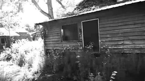

ВНИМАНИЕ: Обнаружена попытка доступа к дестабилизированному сектору.
[ОШИБКА]: НЕВЕРНЫЙ КЛЮЧ ШИФРОВАНИЯ.
[ХАРАКТЕРИСТИКА]: Б3ЗН4ДЁЖ3Н
[АРХИВ НЗФА]: ЗАСЕКРЕЧЕНО; ПОВРЕЖДЕНО
Описание: Сектор #848884 - система нестабильных, крайне опасных пространств, в которых отсутствует понятие нормальной геометрии и безопасности. Система состоит из семи задокументированных зон, и по-мере продвижения по ним пространство станет менее стабильным и более смертоносным.

ПЕРВЫЙ СЛОЙ: «Лимбо» Лимбо представляет собой крайне мелкое Пространство, которое является коробкой. Здесь появляется основная черта Сектора #848884, а именно Дехромизация (см. Phen_0010 в основной базе данных), при которой человек перестаёт видеть какие-либо цвета, кроме оттенков серого, чёрного и белого. В пределах коробки Лимбо можно найти пару избушек, которые выглядят разрушенными. Внутри них ничего нет, кроме часов, которые постоянно тикают и похожи на кота. В центре коробки Первого Слоя можно найти дыру, которая, как вам покажется, вечно идёт вниз. На деле-же это бассейн с грязной водой, из которого нельзя выбраться. Коробка Первого Слоя имеет площадь в 600 миль², и по краям и на потолке можно найти стены, идущие вверх на высоту примерно 260 метров. На потолке находятся лампы, которые изредка моргают, и могут отключиться. Пол состоит из искусственной травы, на которой также рассположены «деревья» и «кусты», которые являются дублированными из-за материала, похожего на бетон внутри (см. Phen_0002 на основном списке). Чтобы выйти отсюда, вам следует найти дверь на востоке коробки, которая будет сливаться со стеной. Войдя в неё, вы упадёте ещё ниже... и ниж3... 5 н5ж3...
ВТОР0Й СЛОЙ: «Соликтудо» Данный слой представляет собой особняк, состоящий из двух этажей, выполненных в готическом стиле. На первом этаже рассположены кухня, гостиная, прихожая, ванная и комната со столом. На втором находятся две спальни (малая и большая) и туалет. Комната со столом и малая спальня имеют странные проходы в реплики них самих, но в меньшем размере, которые циклично ведут в эти-же комнаты но с ещё более мелким размером. Это первые признаки «Фрактальности» данного пространства: когда одна комната ведёт в её-же реплику меньшего размера, в которой есть проход в ещё более мелкую комнатку. Самая мелкая задокументированная площадь - 0,05 мм. В особняке Второго Слоя отсутствует свет, а вместо него есть светящиеся части стен и мебели, прикосновение к которым ведёт к мгновенной аннигиляции человека и мебели. Предполагается, что эти частицы состоят из антиматерии, но это не является доказанным. Здесь также есть уникальное подобие организму: полностью чёрное, поглащающее свет существо, силуэт которого напоминает старика со шляпой. Любой контакт с этим «организмом» приводил к такой-же анигиляции, как и в случае с прикосновением с частями мебели и стен. Чтобы покинуть этот слой и уйти ещё ниже в Сектор #848884, вам нужно найти подвал, который находится в прихожей за лестницей. После спуска по паре десяткам ступенек, вы увидите чёрную пустоту. Пры74йт3.
ТР3ТИЙ СЛ0Й: «Синистеритас» Синистернитас - нелинейное пространство, состоящее из плоской «земли», покрытой снегом, а также бесчисленным количеством столбов, состоящих из дерева. Здесь достаточно светло, но также отсутствует какой-либо шум. Температура здесь всегда находится в районе -50℃, из-за чего здесь очень холодно и при походе сюда рекоммендуется взять с собой тёплую одежду. Кроме столбов и снега, здесь также можно найти и каменные статуи ангелов, большинство из которых находится в снегу. Данные статуи имеют отломленные крылья и лица, а иногда и руки. Причина подобного явления нам неизвестна. Выход находится под землёй. Отодвиньте ангелов и спрыгните в дыру.. Вниз...
Ч3Т83РТЫЙ СЛ0Й: «К0рруптус» Корруптус это первое пространство Сектора #848884, где начинается тотальная нестабильность. Архитектура, если её можно так назвать, состоит из подобия лабиринта, затопленного жидкой ртутью. Стены здесь плывут и иногда образуют дыры, похожие на фракталы. Пол и потолок могут иногда отсутствовать, падать и клеиться к стенам. Здесь также можно найти и дублированные вещи из прошлых слоёв: избушки с часами, мебель или статуи ангелов. Некоторые поверхности состоят из той-же смертельно опасной субстанции, которая иногда появляется на стенах и мебели Второго Слоя. Любой контакт с субстанцией приводит к аннигиляции. Здесь отсутствует свет. Также, кроме часов из избушек, здесь также можно найти и другие часы, которые просто плавают по среди комнат и разлагаются. Некоторые из этих часов находятся в кучке и создают много тикающего шума, который привлекает потерянных странников. Отсюда также есть выход вниз, а именно фракталы в стенах. Некоторые из них состоят из полностью чёрной материи, которая при контакте совершает сильный удар, способный оттолкнуть на тысячи миль невидным человеческому глазу взрывом, который также не способен причинить смертельный вред, что странно. Доказано, что контакт с этой материей может отправить вас.. 3щ3 ниж3.
П97ЫЙ 0KHQm9Cw0Jk=: «Ф1н1с» Пятый слой представляет собой комплекс, где всё, о чём упоминалось выше накладывается друг на друга. Избы летают в воздухе, части особняка ракиданы по пространству, столбы из дерева разложены в хаотичном порядке, а также везде ртуть. Здесь есть малое количество света, исходящее из ламп, которые, вероятно, были взяты из Первого слоя. Однако, кроме хаотично расположенных частей из других слоёв, здесь можно найти и крыши хрущёвок, которые являются единственной стабильной частью данного слоя, поскольку всё остальное является крайне нестабильным и способно убить человека за считанные секунды, разобрав его по атомам или аннигилировав его через антиматерию. Тут есть и сильный туман, который закрывает взор на большую часть слоя. Дабы покинуть этот слой, нужно найти дверь, у которой нет ручки, но есть дверная рамка. Открыв её, вы совершите р0к0в7ю 0шибк7.
0Kgz0KE3MNCZINCh0Jsw0Jk=: «U1AzUyA0TTFTUzQ=»
слишком далеко. надежды больше нет. есть лишь тьма. во тьме одна лампа. следуй.
Инферно. Небытие. Коробка. Пустая, чёрная коробка. Для этого были все страдания? Хотя.. Там есть... Дверь... Она... Стабильна?
Советы: Надежды больше нет.